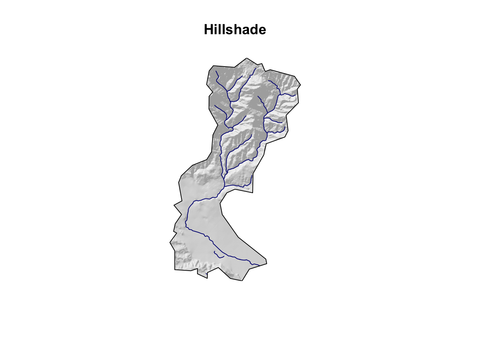
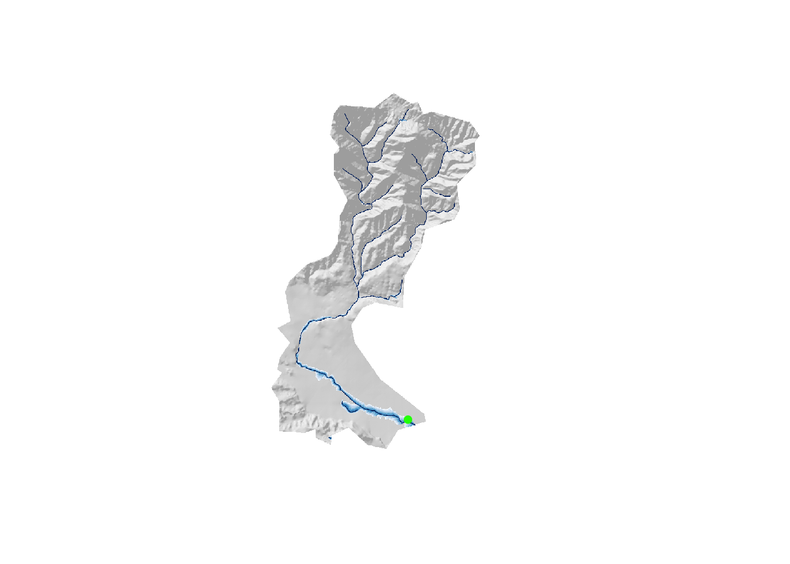
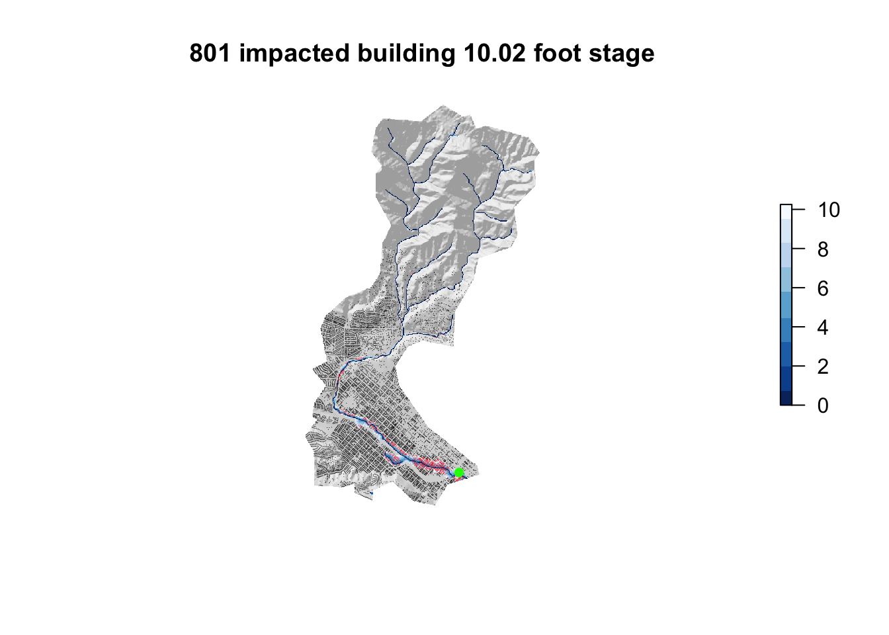

library(sf) # vector manipulation
library(raster) # raster manipulation
library(fasterize) # "faster" raster
library(whitebox) # terrain analysis
library(dplyr)
library(rgdal)
library(tidyverse)
library(AOI)
library(osmdata) # OSM API
library(elevatr) # Elevation Web Tiles
library(gifski) # Gifskibasin = read_sf("https://labs.waterdata.usgs.gov/api/nldi/linked-data/nwissite/USGS-11119750/basin/")
write_sf(basin, dsn = "/Users/xingxin/Github/geog176a-summer-2020-lab1/USGS-11119750.gpkg")
elev = elevatr::get_elev_raster(basin, z = 13) %>%
crop(basin) %>%
mask(basin)
elev_basin = elev * 3.281
writeRaster(elev_basin, filename = "/Users/xingxin/Github/geog176a-summer-2020-lab1/mission-creek-basin-elev.tif", overwrite = TRUE)elev_raster = raster("/Users/xingxin/Github/geog176a-summer-2020-lab1/mission-creek-basin-elev.tif")
bb = st_bbox(basin) %>%
st_as_sfc() %>%
st_transform(4326)
#Building
buildings = osmdata::opq(bb) %>%
add_osm_feature(key = "building") %>%
osmdata_sf()
#Railways
railway = opq(bb) %>%
add_osm_feature(key = 'railway', value = 'station' ) %>%
osmdata_sf()
#Streams
stream = osmdata::opq(bb) %>%
add_osm_feature(key = 'waterway', value = "stream") %>%
osmdata_sf()
#buildings data
buildings_points = buildings$osm_lines %>%
st_intersection(basin) %>%
st_transform(crs(basin))
buildings_poly = buildings$osm_polygons %>%
st_intersection(basin) %>%
st_transform(crs(basin)) %>%
st_centroid()
#railways data
railways = railway$osm_points %>%
st_intersection(basin)
#streams data
streams = stream$osm_lines %>%
st_intersection(basin) ## [1] "hillshade - Elapsed Time (excluding I/O): 0.13s"
## [1] "breach_depressions - Elapsed Time (excluding I/O): 0.102s"## [1] "elevation_above_stream - Elapsed Time (excluding I/O): 0.31s"Floods = raster("/Users/xingxin/Github/geog176a-summer-2020-lab1/hand-raster.tif")
Flood_offset = Floods
Flood_offset[Flood_offset > 10.25] = NAplot(hillshade, axes = FALSE, box = FALSE, col= gray.colors(256, alpha = .5), legend=FALSE)
plot(Flood_offset, add=TRUE, col= rev(blues9), legend=FALSE)
plot(railways$geometry, add=TRUE, col= "green", cex=1, pch=16)
cols = ifelse(!is.na(raster::extract(Flood_offset, buildings_poly)), "red", "black")
plot(hillshade, axes = FALSE, box = FALSE, col = gray.colors(256, alpha = 0.5), legend = FALSE, main = paste(sum(cols =="red"), "impacted building", "10.02 foot stage"), cex = 0.5)
plot(Flood_offset, add = TRUE, col = rev(blues9))
plot(buildings_poly, add = TRUE, col = cols, cex = .08, pch = 16)
plot(railways, add = TRUE, col = "green", cex = 1, pch = 16) ## Question : Does that map look accurate? It’s accurate.